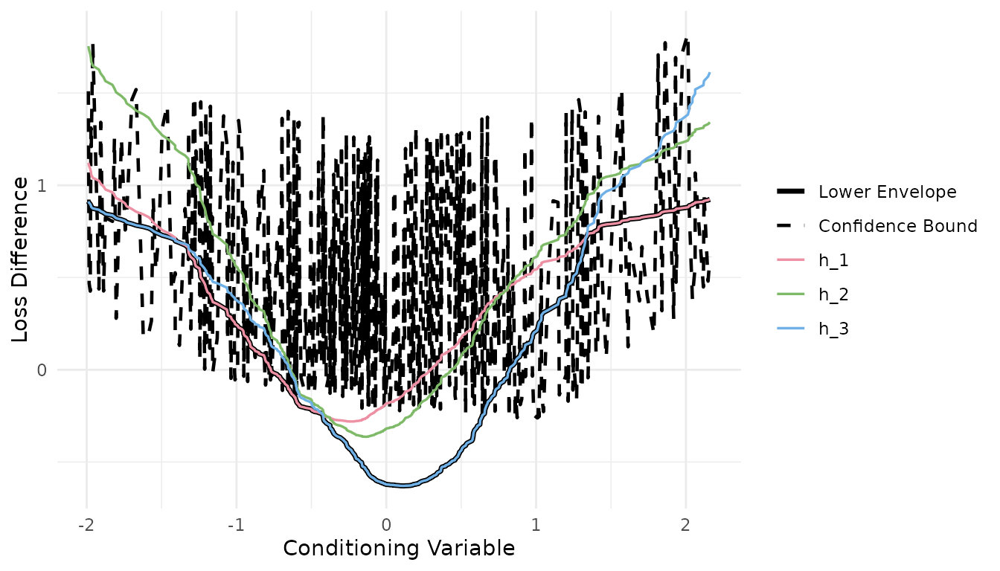

Overview
forecastdom provides a comprehensive suite of forecast evaluation tests organized around the taxonomy proposed by Li, Liao, and Quaedvlieg (2022):
| Equal | Superior | |
|---|---|---|
| Unconditional | dm_test() |
spa_test() |
| Conditional | gw_test() |
cspa_test() |
Along with complementary tests for nested models
(cw_test(), enc_new()), predictive regressions
(ivx_wald()), and parameter instability
(qll_hat()).
library(forecastdom)
set.seed(42)Pairwise Forecast Comparison
Diebold-Mariano Test
The simplest starting point: compare two sets of forecast errors.
e1 <- rnorm(200)
e2 <- rnorm(200, mean = 0.15)
dm_test(e1, e2)
#>
#> ╭────────────────────────────────────────────────────╮
#> │ Modified Diebold-Mariano Test (HLN, 1997) │
#> ├────────────────────────────────────────────────────┤
#> │ H0: Equal predictive ability │
#> │ H1: Methods have different predictive ability │
#> ├┄┄┄┄┄┄┄┄┄┄┄┄┄┄┄┄┄┄┄┄┄┄┄┄┄┄┄┄┄┄┄┄┄┄┄┄┄┄┄┄┄┄┄┄┄┄┄┄┄┄┄┄┤
#> │ Test Results: │
#> │ DM statistic: 0.2073 │
#> │ P-value: 0.8360 │
#> ├┄┄┄┄┄┄┄┄┄┄┄┄┄┄┄┄┄┄┄┄┄┄┄┄┄┄┄┄┄┄┄┄┄┄┄┄┄┄┄┄┄┄┄┄┄┄┄┄┄┄┄┄┤
#> │ Details: │
#> │ Observations (n): 200 │
#> │ Forecast horizon (h): 1 │
#> │ Loss function: SE │
#> │ Reference distribution: t(199) │
#> ╰────────────────────────────────────────────────────╯The correction = TRUE default applies the Harvey,
Leybourne, and Newbold (1997) small-sample correction with
t-distribution critical values.
Clark-West Test
For nested models, the standard DM test is undersized. The Clark-West (2007) MSFE-adjusted test corrects for this:
actual <- rnorm(200)
f1 <- actual + rnorm(200, sd = 0.5) # benchmark (restricted)
f2 <- actual + rnorm(200, sd = 0.4) # alternative (unrestricted)
cw_test(actual - f1, actual - f2, f1, f2)
#>
#> ╭────────────────────────────────────────────────────╮
#> │ Clark-West Test (2007) │
#> ├────────────────────────────────────────────────────┤
#> │ H0: Benchmark MSFE <= Alternative MSFE │
#> │ H1: Alternative model is superior (R2OS > 0) │
#> ├┄┄┄┄┄┄┄┄┄┄┄┄┄┄┄┄┄┄┄┄┄┄┄┄┄┄┄┄┄┄┄┄┄┄┄┄┄┄┄┄┄┄┄┄┄┄┄┄┄┄┄┄┤
#> │ Test Results: │
#> │ CW statistic: 9.1803 │
#> │ P-value (one-sided): 0.0000 │
#> │ R2OS (%): 10.18 │
#> ├┄┄┄┄┄┄┄┄┄┄┄┄┄┄┄┄┄┄┄┄┄┄┄┄┄┄┄┄┄┄┄┄┄┄┄┄┄┄┄┄┄┄┄┄┄┄┄┄┄┄┄┄┤
#> │ Details: │
#> │ Observations (n): 200 │
#> │ Reference distribution: N(0,1) │
#> ╰────────────────────────────────────────────────────╯Giacomini-White Test
Tests whether two methods have conditionally equal predictive ability, using instruments from the information set:
gw_test(e1, e2)
#>
#> ╭────────────────────────────────────────────────────╮
#> │ Conditional Equal Predictive Ability Test │
#> │ (Giacomini and White, 2006) │
#> ├────────────────────────────────────────────────────┤
#> │ H0: Equal conditional predictive ability │
#> │ H1: Methods differ conditionally │
#> ├┄┄┄┄┄┄┄┄┄┄┄┄┄┄┄┄┄┄┄┄┄┄┄┄┄┄┄┄┄┄┄┄┄┄┄┄┄┄┄┄┄┄┄┄┄┄┄┄┄┄┄┄┤
#> │ Test Results: │
#> │ Wald statistic: 1.3426 │
#> │ P-value: 0.5110 │
#> ├┄┄┄┄┄┄┄┄┄┄┄┄┄┄┄┄┄┄┄┄┄┄┄┄┄┄┄┄┄┄┄┄┄┄┄┄┄┄┄┄┄┄┄┄┄┄┄┄┄┄┄┄┤
#> │ Details: │
#> │ Observations (n): 199 │
#> │ Instruments (q): 2 │
#> │ Loss function: SE │
#> │ Reference distribution: Chi-sq(2) │
#> ╰────────────────────────────────────────────────────╯Multiple Forecast Comparison
Hansen’s SPA Test
Tests whether a benchmark is unconditionally superior to all competitors simultaneously:
sim <- do_sim(J = 3, n = 250, a = 1, c = 0, rho_u = 0.4)
spa_test(sim$Y, level = 0.05, B = 1000)
#>
#> ╭────────────────────────────────────────────────────╮
#> │ Superior Predictive Ability Test │
#> │ (Hansen, 2005) │
#> ├────────────────────────────────────────────────────┤
#> │ H0: Benchmark is superior to all competitors │
#> │ H1: Some competitor outperforms the benchmark │
#> ├┄┄┄┄┄┄┄┄┄┄┄┄┄┄┄┄┄┄┄┄┄┄┄┄┄┄┄┄┄┄┄┄┄┄┄┄┄┄┄┄┄┄┄┄┄┄┄┄┄┄┄┄┤
#> │ Test Results: │
#> │ SPA statistic: 50.4916 │
#> │ P-value (bootstrap): 0.0020 │
#> │ Decision: Rejected *** │
#> ├┄┄┄┄┄┄┄┄┄┄┄┄┄┄┄┄┄┄┄┄┄┄┄┄┄┄┄┄┄┄┄┄┄┄┄┄┄┄┄┄┄┄┄┄┄┄┄┄┄┄┄┄┤
#> │ Details: │
#> │ Observations (n): 250 │
#> │ Competitors (J): 3 │
#> │ Bootstrap replications: 1000 │
#> │ Significance level: 0.0500 │
#> ╰────────────────────────────────────────────────────╯CSPA Test
The main contribution of Li, Liao, and Quaedvlieg (2022). Tests whether the benchmark’s conditional expected loss is no more than that of any competitor, uniformly across all conditioning states:
# Under the null (a = 1): benchmark weakly dominates
sim_null <- do_sim(J = 3, n = 500, a = 1, c = 0, rho_u = 0.4)
cspa_test(sim_null$Y, sim_null$X, level = 0.05, trim = 2)
#>
#> ╭────────────────────────────────────────────────────╮
#> │ Conditional Superior Predictive Ability │
#> │ (Li, Liao, and Quaedvlieg, 2022) │
#> ├────────────────────────────────────────────────────┤
#> │ H0: Benchmark weakly dominates all competitors │
#> │ conditionally, uniformly across all states │
#> │ H1: Some competitor outperforms the benchmark │
#> │ in certain conditioning states │
#> ├┄┄┄┄┄┄┄┄┄┄┄┄┄┄┄┄┄┄┄┄┄┄┄┄┄┄┄┄┄┄┄┄┄┄┄┄┄┄┄┄┄┄┄┄┄┄┄┄┄┄┄┄┤
#> │ Test Results: │
#> │ Theta: 0.1488 │
#> │ P-value: 0.4666 │
#> │ Significance level: 0.0500 │
#> │ Decision: Not rejected │
#> ├┄┄┄┄┄┄┄┄┄┄┄┄┄┄┄┄┄┄┄┄┄┄┄┄┄┄┄┄┄┄┄┄┄┄┄┄┄┄┄┄┄┄┄┄┄┄┄┄┄┄┄┄┤
#> │ Estimation Details: │
#> │ Observations (n): 480 │
#> │ Competitors (J): 3 │
#> │ Series terms (K): 4 │
#> │ HAC lag order: 1 (pre-whitened) │
#> │ Selected (j,x) pairs: 1440 / 1440 (100.0%) │
#> ╰────────────────────────────────────────────────────╯
# Under the alternative (a = 1.5): a competitor outperforms in some states
sim_alt <- do_sim(J = 3, n = 500, a = 1.5, c = 0, rho_u = 0.4)
result <- cspa_test(sim_alt$Y, sim_alt$X, level = 0.05, trim = 2)
result
#>
#> ╭────────────────────────────────────────────────────╮
#> │ Conditional Superior Predictive Ability │
#> │ (Li, Liao, and Quaedvlieg, 2022) │
#> ├────────────────────────────────────────────────────┤
#> │ H0: Benchmark weakly dominates all competitors │
#> │ conditionally, uniformly across all states │
#> │ H1: Some competitor outperforms the benchmark │
#> │ in certain conditioning states │
#> ├┄┄┄┄┄┄┄┄┄┄┄┄┄┄┄┄┄┄┄┄┄┄┄┄┄┄┄┄┄┄┄┄┄┄┄┄┄┄┄┄┄┄┄┄┄┄┄┄┄┄┄┄┤
#> │ Test Results: │
#> │ Theta: -0.2217 │
#> │ P-value: 0.0002 │
#> │ Significance level: 0.0500 │
#> │ Decision: Rejected *** │
#> ├┄┄┄┄┄┄┄┄┄┄┄┄┄┄┄┄┄┄┄┄┄┄┄┄┄┄┄┄┄┄┄┄┄┄┄┄┄┄┄┄┄┄┄┄┄┄┄┄┄┄┄┄┤
#> │ Estimation Details: │
#> │ Observations (n): 480 │
#> │ Competitors (J): 3 │
#> │ Series terms (K): 4 │
#> │ HAC lag order: 1 (pre-whitened) │
#> │ Selected (j,x) pairs: 1440 / 1440 (100.0%) │
#> ╰────────────────────────────────────────────────────╯Visualization
The cspa_test_plot() function displays the estimated
conditional mean functions
,
their lower envelope, and the confidence bound:
cspa_test_plot(result)
Predictive Regressions
IVX-Wald Test
Robust test for return predictability with potentially persistent predictors:
n <- 300
x <- cumsum(rnorm(n))
y <- 0.02 * x + rnorm(n)
ivx_wald(y, as.matrix(x), K = 1, M_n = floor(n^(1/3)))
#>
#> ╭────────────────────────────────────────────────────╮
#> │ IVX-Wald Test for Predictive Regressions │
#> │ (Kostakis, Magdalinos, and Stamatogiannis, 2015) │
#> ├────────────────────────────────────────────────────┤
#> │ H0: No predictability (all coefficients = 0) │
#> │ H1: At least one predictor is significant │
#> ├┄┄┄┄┄┄┄┄┄┄┄┄┄┄┄┄┄┄┄┄┄┄┄┄┄┄┄┄┄┄┄┄┄┄┄┄┄┄┄┄┄┄┄┄┄┄┄┄┄┄┄┄┤
#> │ Test Results: │
#> │ IVX-Wald statistic: 13.4596 │
#> │ P-value: 0.0002 │
#> ├┄┄┄┄┄┄┄┄┄┄┄┄┄┄┄┄┄┄┄┄┄┄┄┄┄┄┄┄┄┄┄┄┄┄┄┄┄┄┄┄┄┄┄┄┄┄┄┄┄┄┄┄┤
#> │ Details: │
#> │ Observations (T): 300 │
#> │ Predictors (r): 1 │
#> │ Forecast horizon (K): 1 │
#> │ Reference distribution: Chi-sq(1) │
#> ├┄┄┄┄┄┄┄┄┄┄┄┄┄┄┄┄┄┄┄┄┄┄┄┄┄┄┄┄┄┄┄┄┄┄┄┄┄┄┄┄┄┄┄┄┄┄┄┄┄┄┄┄┤
#> │ IVX Coefficients: │
#> │ beta_1: 0.0249 │
#> ╰────────────────────────────────────────────────────╯Elliott-Muller Test
Tests the null hypothesis of constant regression coefficients against the alternative of general time variation:
X <- matrix(rnorm(n * 2), n, 2)
y2 <- X %*% c(0.5, -0.3) + rnorm(n)
qll_hat(y2, X, L = floor(n^(1/3)))
#>
#> ╭────────────────────────────────────────────────────╮
#> │ Elliott-Muller Test for Time-Varying Coefficients │
#> │ (Elliott and Muller, 2006) │
#> ├────────────────────────────────────────────────────┤
#> │ H0: Constant coefficients (beta(t) = beta) │
#> │ H1: Time-varying coefficients │
#> ├┄┄┄┄┄┄┄┄┄┄┄┄┄┄┄┄┄┄┄┄┄┄┄┄┄┄┄┄┄┄┄┄┄┄┄┄┄┄┄┄┄┄┄┄┄┄┄┄┄┄┄┄┤
#> │ Test Results: │
#> │ qLL-hat statistic: -7.2358 │
#> │ 5% critical value: -10.64 │
#> │ Decision (5%): Not rejected │
#> ├┄┄┄┄┄┄┄┄┄┄┄┄┄┄┄┄┄┄┄┄┄┄┄┄┄┄┄┄┄┄┄┄┄┄┄┄┄┄┄┄┄┄┄┄┄┄┄┄┄┄┄┄┤
#> │ Details: │
#> │ Observations (T): 300 │
#> │ Time-varying coefficients (k): 2 │
#> │ Note: Non-standard distribution. │
#> │ Reject when qLL-hat < critical value. │
#> ╰────────────────────────────────────────────────────╯References
- Clark, T.E. and McCracken, M.W. (2001). Tests of Equal Forecast Accuracy and Encompassing for Nested Models. Journal of Econometrics, 105(1), 85-110.
- Clark, T.E. and West, K.D. (2007). Approximately Normal Tests for Equal Predictive Accuracy in Nested Models. Journal of Econometrics, 138(1), 291-311.
- Diebold, F.X. and Mariano, R.S. (1995). Comparing Predictive Accuracy. Journal of Business & Economic Statistics, 13(3), 253-263.
- Elliott, G. and Muller, U.K. (2006). Efficient Tests for General Persistent Time Variation in Regression Coefficients. Review of Economic Studies, 73(4), 907-940.
- Giacomini, R. and White, H. (2006). Tests of Conditional Predictive Ability. Econometrica, 74(6), 1545-1578.
- Hansen, P.R. (2005). A Test for Superior Predictive Ability. Journal of Business & Economic Statistics, 23(4), 365-380.
- Harvey, D., Leybourne, S., and Newbold, P. (1997). Testing the Equality of Prediction Mean Squared Errors. International Journal of Forecasting, 13(2), 281-291.
- Kostakis, A., Magdalinos, T., and Stamatogiannis, M.P. (2015). Robust Econometric Inference for Stock Return Predictability. Review of Financial Studies, 28(5), 1506-1553.
- Li, J., Liao, Z., and Quaedvlieg, R. (2022). Conditional Superior Predictive Ability. Review of Economic Studies, 89(2), 843-875.